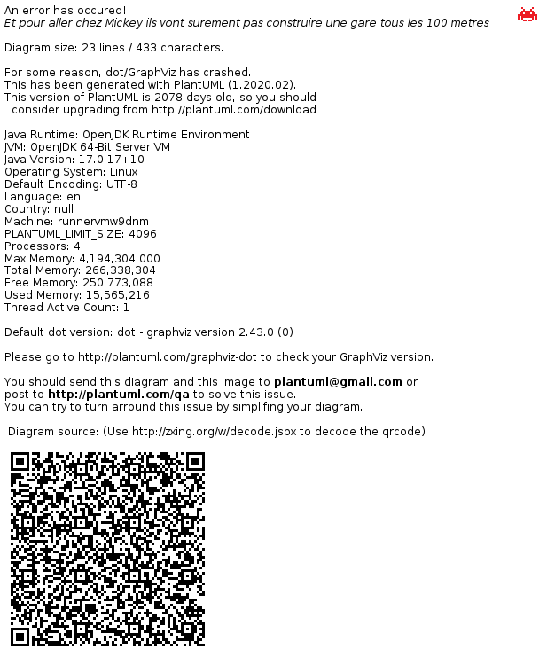

For Developers / Advanced Users¶
States And Connections¶
The basic principles of muting, monitoring, recording, playing back etc. are straightforward. However, in the case of a dry/wet combined looping setup, these principles can get confusing and/or impossible to implement perfectly, given that only a single FX processor exists.
For example, it is not possible to re-record the dry audio of multiple loops into their respective wet audio channels if they are sharing the same track (and thus the same FX processor). Their wet audio would be combined. Likewise, it is not possible to monitor the input while re-recording a loop.
Therefore some compromises have been made to select what is probably the most desirable wiring for each state of loop(s) and monitoring.
The following diagrams show the internal wiring of ShoopDaLoop’s ports and loops, including which signal paths are disabled / silent in different track/loop states.

Connections in different states.¶
Lua Scripting¶
Introduction¶
ShoopDaLoop supports embedded Lua scripts for querying and controlling the application. For example, these are used to define how ShoopDaLoop reacts to control MIDI events. Lua scripts can be provided by the user and don’t require a re-installation of the software.
Lua inside ShoopDaLoop is sandboxed for security making a large part of the standard libary unavailable. Only a whitelisted list of functions can be used. See sandbox.lua for details. Most notably: not any module can be imported through require. Only ShoopDaLoop-provided modules can be used.
API and Libraries¶
The API consists of globally available functions and constants, in addition to functions and constants available through built-in libraries. Built-in libraries should be included in scripts using the require function. Check src/lua/builtins/keyboard.lua for an example.
Globally available APIs¶
print(msg), print_debug(msg), print_error(msg), print_info(msg): Print a message to the Frontend.LuaScript logger. Respective log levels are info (default), debug, error.
module: shoop_control¶
Provides basic interfacing with ShoopDaLoop. Note that these functions are provided as bindings into the application - they are not written in Lua.
- shoop_control.loop_count(loop_selector) -> int
Count the amount of loops given by the selector.
- shoop_control.loop_get_all() -> [[x1,y1],[x2,y2],…]
Get the coordinates of all loops.
- shoop_control.loop_get_which_selected() -> [[x1,y1],[x2,y2],…]
Get the coordinates of all currently selected loops.
- shoop_control.loop_get_which_targeted() -> [x,y] | nil
Get the coordinates of the currently targeted loop, or None if none are targeted.
- shoop_control.loop_get_by_mode(mode) -> [[x1,y1],[x2,y2],…]
Get the coordinates of all loops with the given mode.
- shoop_control.loop_get_mode(loop_selector) -> list[LoopMode]
Get the current mode of the specified loops.
- shoop_control.loop_get_next_mode(loop_selector) -> list[ LoopMode or nil ]
For the specified loops, get the upcoming mode transition, if any.
- shoop_control.loop_get_next_mode_delay(loop_selector) -> list[ int or nil ]
For the specified loops, get the upcoming mode transition delay in cycles, if any.
- shoop_control.loop_get_length(loop_selector) -> list[int]
Get the length of the specified loops in samples.
- shoop_control.loop_get_by_track(track) -> [[x1,y1],[x2,y2],…]
Get the coordinates of all loops with the given mode.
- shoop_control.loop_transition(loop_selector, mode, maybe_cycles_delay, maybe_align_to_sync_at)
Transition the given loops. Pass shoop_control.constants.Loop_DontWaitForSync and shoop_control.constants.Loop_DontAlignToSyncImmediately to maybe_cycles_delay and maybe_align_to_sync_at respectively, to disable them.
- shoop_control.loop_trigger(loop_selector, mode)
Trigger the loop with the given mode. Equivalent to pressing the loop’s button in the UI. That means the way the trigger is interpreted also depends on the global controls for e.g. sync.
- shoop_control.loop_trigger_grab(loop_selector, mode)
Trigger a ringbuffer grab on the given loop. Equivalent to pressing the grab button.
- shoop_control.loop_get_gain(loop_selector) -> list[float]
Get the output audio gain of the specified loops as a gain factor.
- shoop_control.loop_get_gain(loop_selector) -> list[float]
Get the output audio gain fader position as a fraction of its total range (0-1) of the given loop.
- shoop_control.loop_get_balance(loop_selector) -> list[float]
Get the output audio balance of the specified stereo loops.
- shoop_control.loop_record_n(loop_selector, n_cycles, cycles_delay)
Record the given loops for N cycles synchronously.
- shoop_control.loop_record_with_targeted(loop_selector)
Record the given loops in sync with the currently targeted loop.
- shoop_control.loop_set_gain(loop_selector, gain)
Set the output audio gain of the specified loops as a gain factor.
- shoop_control.loop_set_gain(loop_selector)
Set the output audio gain fader position as a fraction of its total range (0-1) of the given loop.
- shoop_control.loop_set_balance(loop_selector, balance)
Set the audio output balance for the specified loops.
- shoop_control.loop_select(loop_selector, deselect_others)
Select the specified loops. If deselect_others is true, all other loops are deselected.
- shoop_control.loop_target(loop_selector)
Target the specified loop. If the selector specifies more than one loop, a single loop in the set is chosen arbitrarily. If nil or no loop is passed, the targeted loop is cleared.
- shoop_control.loop_clear(loop_selector)
Clear the given loops.
- shoop_control.loop_clear_all()
Clear all loops.
- shoop_control.loop_clear_all()
Untarget all loops.
- shoop_control.loop_toggle_selected(loop_selector)
Toggle selection on the specified loops.
- shoop_control.loop_toggle_targeted(loop_selector)
Target the specified loop or untarget it if already targeted. If the selector specifies more than one loop, a single loop in the set is chosen arbitrarily. If nil or no loop is passed, the targeted loop is cleared.
- shoop_control.loop_adopt_ringbuffers(loop_selector, reverse_cycle_start, cycles_length, go_to_cycle, go_to_mode)
For all channels in the given loops, grab the data currently in the ringbuffer and set it as the content (i.e. after-the-fact-recording or “grab”). reverse_cycle_start sets the start offset for playback. 0 means to play what was being recorded in the current sync loop cycle, 1 means start from the previous cycle, etc. go_to_cycle and go_to_mode can control the cycle and mode the loop will have right after adopting. cycles_length sets the loop length.
- shoop_control.loop_compose_add_to_end(loop_selector, loop_selector, parallel)
Add a loop to the a composition. The first argument is the singular target loop in which the composition is stored. If empty, a composition is created. The second argument is the loop that should be added. The third argument is whether the addition should be parallel to the existing composition. If false, the loop is added to the end.
- shoop_control.loop_set_repeat_sync(loop_selector, active)
Enables/disables the sync on playback repeat for the loop: whether the loop waits for sync with the sync loop after it reached its end, before restarting.
- shoop_control.track_get_gain(track_selector) -> list[float]
Get the gain of the given track(s) as a gain factor.
- shoop_control.track_get_balance(track_selector) -> list[float]
Get the balance of the given track(s) as a value between -1 and 1.
- shoop_control.track_get_gain_fader(track_selector) -> list[float]
Get the gain of the given track(s) as a fraction of its total range (0-1).
- shoop_control.track_get_input_gain(track_selector) -> list[float]
Get the input gain of the given track(s) as a gain factor.
- shoop_control.track_get_input_gain_fader(track_selector) -> list[float]
Get the input gain of the given track(s) as a fraction of its total range (0-1).
- shoop_control.track_get_muted(track_selector) -> list[bool]
Get whether the given track(s) is/are muted.
- shoop_control.track_set_muted(track_selector, bool)
Set whether the given track is muted.
- shoop_control.track_get_input_muted(track_selector) -> list[bool]
Get whether the given tracks’ input(s) is/are muted.
- shoop_control.track_set_input_muted(track_selector, muted)
Set whether the given track’s input is muted.
- shoop_control.track_set_gain(track_selector, vol)
Set the given track’s gain as a gain factor.
- shoop_control.track_set_balance(track_selector, val)
Set the given track’s balance as a value between -1 and 1.
- shoop_control.track_set_gain_fader(track_selector, vol)
Set the given track’s gain as a fraction of its total range (0-1).
- shoop_control.track_set_input_gain(track_selector, vol)
Set the given track’s input gain as a gain factor.
- shoop_control.track_set_input_gain_fader(track_selector, vol)
Set the given track’s input gain as a fraction of its total range (0-1).
- shoop_control.set_apply_n_cycles(n)
Set the amount of sync loop cycles future actions will be executed for. Setting to 0 will disable this - actions will be open-ended.
- shoop_control.get_apply_n_cycles(n)
Get the amount of sync loop cycles future actions will be executed for. 0 means disabled.
- shoop_control.set_solo(val)
Set the global “solo” control state.
- shoop_control.get_solo() -> bool
Get the global “solo” control state.
- shoop_control.set_sync_active(val)
Set the global “sync_active” control state.
- shoop_control.get_sync_active() -> bool
Get the global “sync_active” control state.
- shoop_control.set_play_after_record(val)
Set the global “play_after_record” control state.
- shoop_control.get_play_after_record() -> bool
Get the global “play_after_record” control state.
- shoop_control.set_default_recording_action(val)
Set the global “default recording action” control state. Valid values are ‘record’ or ‘grab’ - others are ignored.
- shoop_control.get_default_recording_action() -> string
Get the global “default recording action” control state (‘record’ or ‘grab’).
- shoop_control.register_loop_event_cb(callback)
Register a callback for loop events. See loop_callback for details.
- shoop_control.register_global_event_cb(callback)
Register a callback for global events, e.g. global controls changes. See global_event_callback for details.
- shoop_control.register_keyboard_event_cb(callback)
Register a callback for keyboard events. See keyboard_callback for details.
- shoop_control.one_shot_timer_cb(callback, time_ms)
Register a callback to happen after the given amount of ms, once.
- shoop_control.auto_open_device_specific_midi_control_output(device_name_filter_regex, opened_callback, connected_callback, msg_rate_limit_hz)
Instruct the application to automatically open a MIDI control output port if a device matching the regex appears, and connect to it. Also registers callbacks for when the port is opened and connected. These callbacks just pass a port object which has a ‘send’ method to send bytes. “msg_rate_limit_hz” can be used to limit the rate at which messages will be sent to the port. Some devices become unstable if sent too fast. Setting this to 0 disables the limit.
- shoop_control.auto_open_device_specific_midi_control_input(device_name_filter_regex, message_callback)
Instruct the application to automatically open a MIDI control input port if a device matching the regex appears, and connect to it. Also registers a callback for received MIDI events on such a port. See midi_callback for details.
- type loop_event_type
Loop event type. Possible values: - shoop_control.constants.LoopEventType_ModeChanged - shoop_control.constants.LoopEventType_LengthChanged - shoop_control.constants.LoopEventType_SelectedChanged - shoop_control.constants.LoopEventType_TargetedChanged - shoop_control.constants.LoopEventType_CoordsChanged
- type loop_callback
Loop event callback type. The callback takes an event argument, which is a table with fields: - ‘coords’ (table [x,y]) - ‘type’ (loop_event_type) - ‘mode’ (mode) - ‘selected’ (bool) - ‘targeted’ (bool) - ‘length’ (int). Coordinates map to the loop grid. Only the sync loop has a special location [-1,0].
- type global_event_type
Loop event type. Possible values: - shoop_control.constants.GlobalEventType_GlobalControlChanged
- type global_event_callback
Global event callback type. The callback takes a table with fields: ‘type’ (global_event_type)
- type keyboard_event_callback
Keyboard event callback type. The callback takes a table with fields: - ‘type’ (keyboard_event_type, see shoop_control.constants.KeyEventType_[Pressed, Released]) - ‘key’ (integer, see keycode constants e.g. shoop_control.constants.Key_[…]) - ‘modifiers’ (integer, flag combination of e.g. shoop_control.constants.KeyModifier_[…]Modifier)
module: shoop_coords¶
Provides helper functions to manipulate loop and track coordinates. Implemented in shoop_coords.lua.
- shoop_coords.move(coords, direction_key) -> coords
Take a single coordinates list and return coordinates if they were moved to the direction indicated by the given keyboard key.
- shoop_coords.extreme(all_coords, direction_key, highest) -> coord
Look for the highest (if highest == true) or lowest index (row/col) in the given direction
module: shoop_helpers¶
Provides helper functions for advanced control. Implemented in shoop_helpers.lua.
- shoop_helpers.expand_selection(direction_key)
Given a direction key, expand the current selection of loops by adding the loop(s) in the given direction.
- shoop_helpers.shrink_selection(direction_key)
Given a direction key, shrink the current selection of loops by removing loops “coming from” that direction.
- shoop_helpers.move_selection(direction_key)
Given a direction key, move the selection of loops to that direction if none of the loops would be out of bounds.
- shoop_helpers.default_loop_action(loop_selector, dry)
Perform the “default loop action” on a set of loop coordinates. The default loop action is designed to cycle intuitively from empty to recording/grabbing, playing and stopping. If “dry” is set to true, going to playback will go to playing dry through wet instead.
- shoop_helpers.record_into_first_empty(overdub)
In the track(s) of all selected loop(s) (or recording loop(s) of none selected), find the first empty loop and start recording into it. If overdub is true, already recording loops will transition to Playing. Otherwise, they will transition to Stopped.
- shoop_helpers.toggle_solo()
Toggle the global “solo” control
- shoop_helpers.toggle_sync_active()
Toggle the global “sync active” control
- shoop_helpers.toggle_play_after_record()
Toggle the global “sync active” control
- shoop_helpers.track_toggle_muted(index)
Toggle the muted state of the given track. -1 is the sync track.
- shoop_helpers.track_toggle_input_muted(index)
Toggle the input muted state of the given track. -1 is the sync track.
- shoop_helpers.start_sampler(loops)
Start “sampler mode” on the given loops. This just means to transition them to recording (if empty) or playing (if non-empty) immediately, without regard for sync with other loops. They will immediately exit the mode when stop_sampler() is called.
- shoop_helpers.stop_sampler()
Stop “sampler mode”. This means that any loop which was started with “start_sampler(…)” will immediately stop.
module: shoop_format¶
Provides helper functions for formatting strings. Implemented in shoop_format.lua.
- shoop_format.format_table(table, recursive) -> string
Format a table such that all elements can be inspected.
Software Design¶
Architecture¶
ShoopDaLoop is built up as a back-end and a front-end, which are connected through a C API interface.

Overall software stack¶
The split between front-end and back-end is not entirely pure, as different parts of the functionality are implemented in the layer where it is most convenient.
The libshoopdaloop_backend backend handles:
All real-time audio + MIDI processing
Interconnections of ports, loop channels and FX
Nearly all calls to the JACK API (exceptions below)
Logging and profiling
Basic loop synchronization (loop transitions)
The front-end + extensions handle:
The user interface
Session saving/loading
Advanced loop synchronization (scheduling loop transitions over multiple sync loop cycles)
Composite loops
Thread-decoupled forwarding of UI events to/from the back-end
The LUA scripts are meant for parts that may need to be added/modified by individual users, such as:
MIDI controller profiles
Keyboard control
Build And Packaging¶
The combination of different languages, OSes and the dual dependency on Qt and PySide has resulted in a complex build approach. As the project is packaged as a Python package, an approach based on pyproject.toml has been taken. For the C++ parts, CMake is used. For combining the two, a tool called py-build-cmake is used. The CMake part cannot be run trivially without the py-build-cmake integration because there is also some code generation taking place which requires both sides of the equation. A source package cannot be built - only a wheel directly. Please refer to the build instructions for details.
For a build on the same system where ShoopDaLoop is to be used, the building is pretty much a “straightforward” py-build-cmake build.
For the official release wheels though, the setup is more complicated because we need to be binary-compatible with the Qt libraries that ship with PySide. Documentation for this will be added in the future, when the still pending improvements to this build flow are finished.
Debugging¶
There are several tools at your disposal for debugging:
The logging framework is available at all levels in the software stack. It allows for logging at different levels, and filtering on levels or components where the message originated from. Note that in a release build, the debug and trace levels are removed from C++ during compilation, so less logging is available.
The built-in profiler allows checking which parts take up the most time in the audio process loop. It can be accessed from the user interface.
The built-in debug inspector can inspect back-end objects’ states from the user interface.
ShoopDaLoop can be run with the -d PORT flag to connect a QML debug client or profiler (such as those offered from QtCreator).
Testing¶
The test suites for ShoopDaLoop are by no means complete, but do test essential functions at several levels. The following testing tools exist:
C++ unit and integration tests powered by boost_ext::ut.
Rust unit and integration tests powered by cargo, testing individual front-end extensions.
QML unit and integration tests powered by Qt Quick Test.
The QML integration tests come closest to “system-level”. For example, there are tests there which can check cycle-accurately that the correct audio samples are produced based on what the user clicked in the user interface.
Coverage is generated at each of the aforementioned test levels. QML coverage generation is powered by qoverage.
Continuous integration¶
CI automation code is in-repo for GitHub Actions.